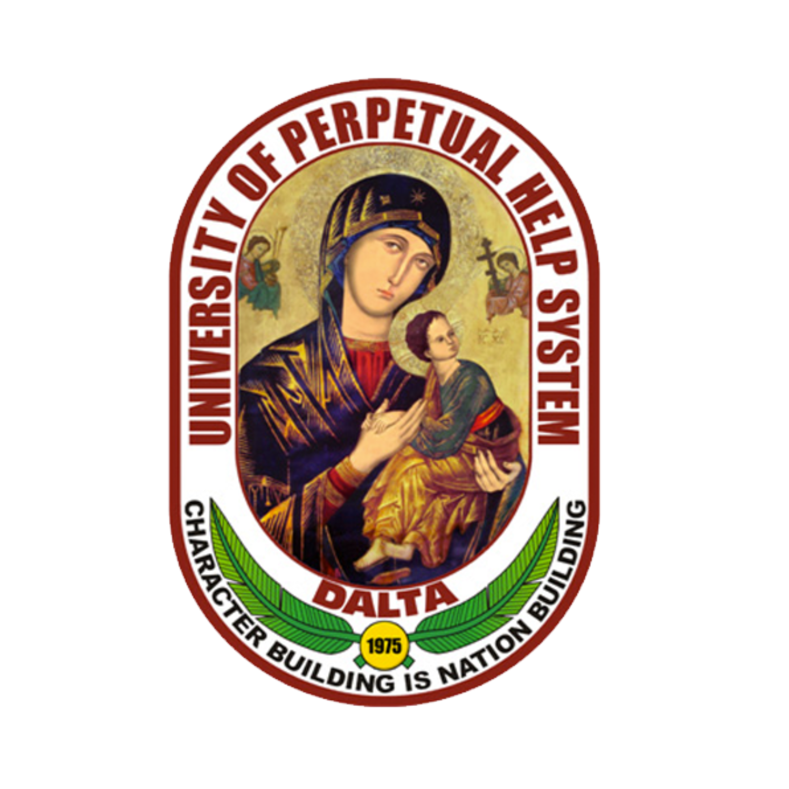
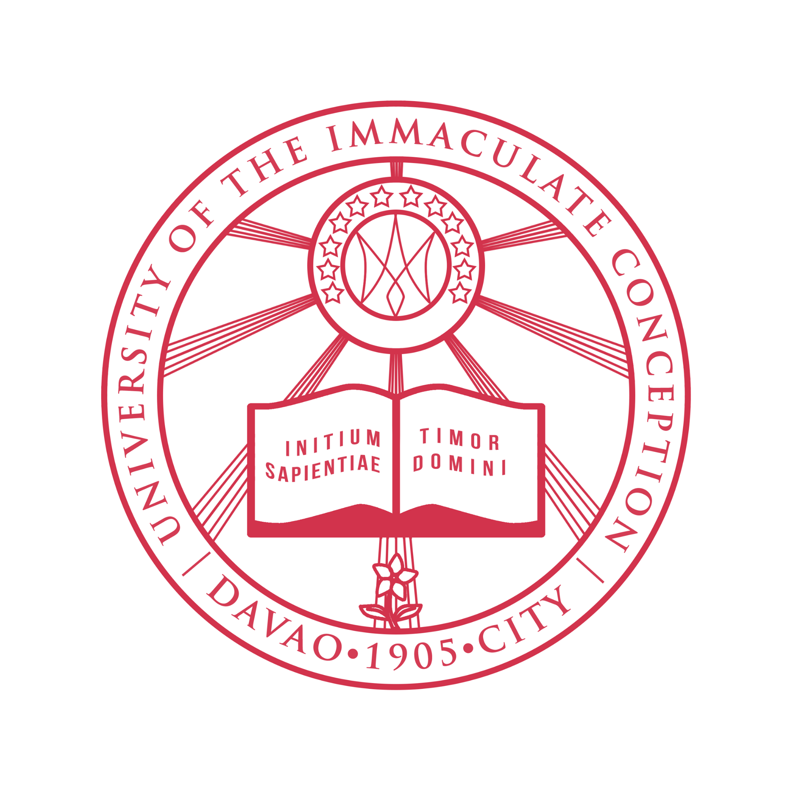
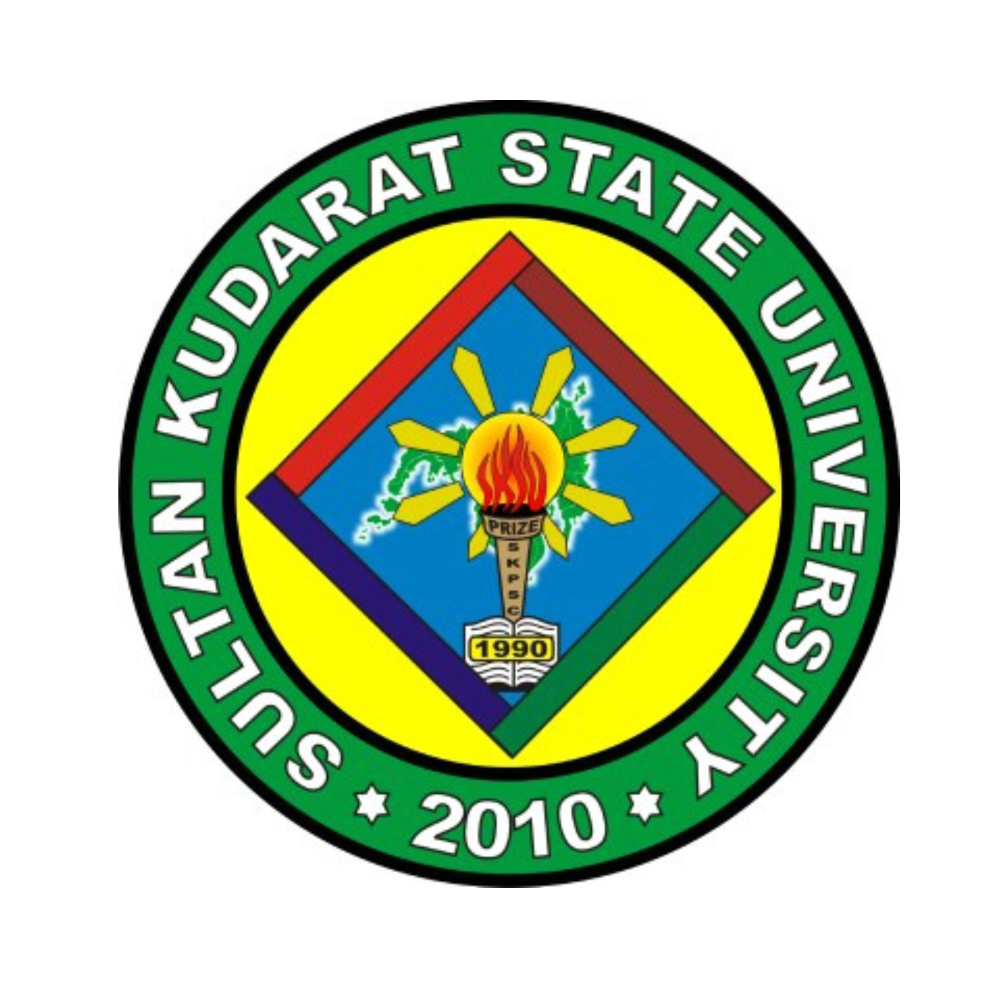

2025 - Present
University of Perpetual Help System - DALTA
Doctor of Philosophy in Education Major in Educational Management
Alabang-Zapote Road, Pamplona 3, Las Pinas City, 1740
A comprehensive timeline of leadership in educational administration, pedagogical service, professional engagement, and strategic institutional development.
"An educational leader and student affairs practitioner dedicated to inclusive learner development, institutional excellence, research engagement, and community-responsive service."

2025 - Present
Doctor of Philosophy in Education Major in Educational Management
Alabang-Zapote Road, Pamplona 3, Las Pinas City, 1740

2023 - 2025
Master of Arts in Educational Management
Fr. Selga St., Davao City, 8000, Philippines

2019 - 2023
Master of Arts in Teaching Science (CAR, 34 Units)
EJC Montilla, Tacurong City, 9800, Philippines
2013 - 2017
Bachelor of Secondary Education Major in Physical Science
Alunan Avenue, City of Koronadal, 9506, South Cotabato, Philippines
Feb 2025 - Present
Director, Student Affairs and Services
Ramon Magsaysay Memorial Colleges-Marbel, Inc. (RMMC-MI)
City of Koronadal, South Cotabato
Aug 2023 - Jan 2025
STEM Adviser/SHS Instructor I
Ramon Magsaysay Memorial Colleges-Marbel, Inc. (RMMC-MI)
City of Koronadal, South Cotabato
May 2021 - Apr 2022
Junior High School Academic Head
Notre Dame of Surala, Inc. (NDSI)
Surallah, South Cotabato
May 2018 - Apr 2022
Junior and Senior High School Science Teacher
Notre Dame of Surala, Inc. (NDSI)
Surallah, South Cotabato
Educational Leadership & Management
Student Affairs & Support Services
Project Management & Team Leadership
STEM Education and Curriculum Development
Research & Data Analysis
Communication and Public Speaking
Asia-Pacific Consortium of Researchers and Educators, 2025
Human Resources Educators' Association of the Philippines, 2025
Samahang Pisika ng Visayas at Mindanao, 2024
Philippine Association of Physics and Science Instructors, 2018
Professional Regulations Commission, 2017
Notre Dame of Surala, Inc. Moving-Up Ceremony 2026
Leadership, public speaking, and student support milestones.
Scholarly review, constructive feedback, and support for research quality.
Research advocacy, academic presentations, and professional collaboration.
Professional development in leadership, learner support, research, administration, and educational practice.
Community service and governance experience, including youth leadership and public service initiatives.